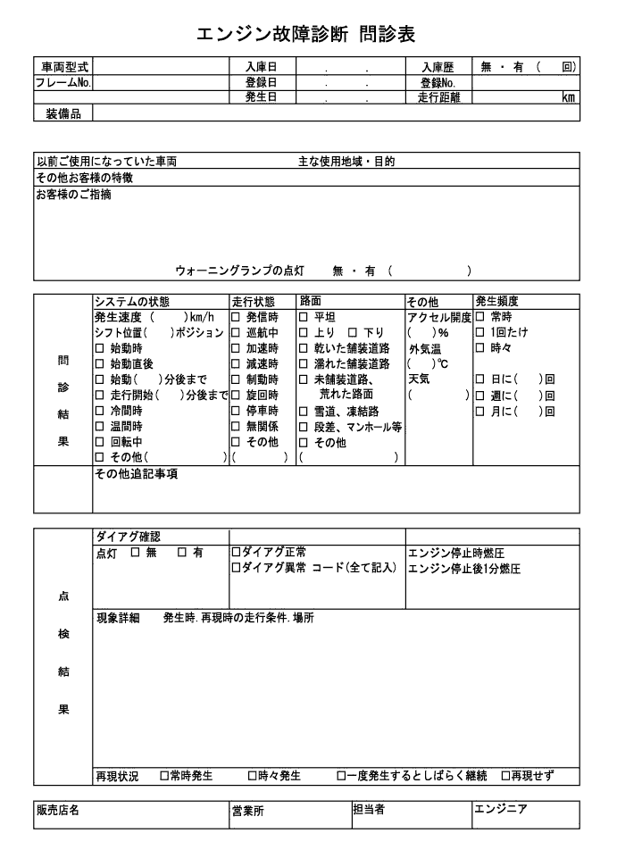

EFI System (2GR-FE) Customer Problem Analysis Check Sheet |
Following How to Proceed with Troubleshooting in the previous section, use this check sheet as a reference to conduct a thorough customer problem analysis when listening to the customer's request.
